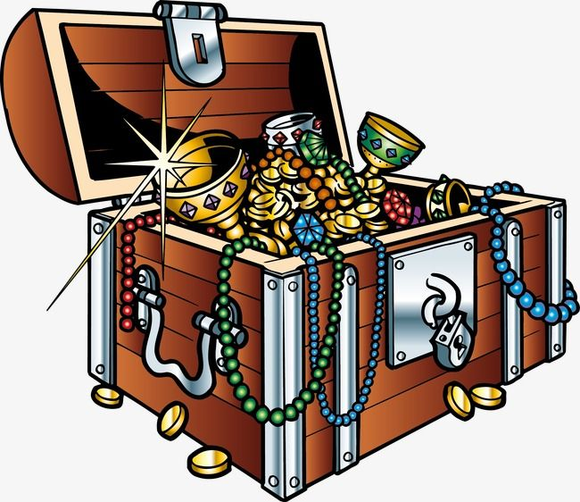

Você é um(a) jovem em mundo medieval que sonha em navegar e ser um grande navegador, assim como o seu falecido pai, então você decide entrar para uma pequena tripulação e ir em busca do tesouro perdido de Henflas, o antigo rei de Miniaum. Nessa aventura você pode seguir por duas rotas Zullas, atravessando o mar escaldante e o bosque dos gigante ou a rota Winter, atravessando o mar Laum e o estreito das bruxas
Ao decidir seguir o caminho de Zullas vocês passam por paisagens quentes e tropicais, mas antes mesmo de chegar ao mar escaldante vocês encontram o su primeiro desafio, veem um navio dos Rorgs,uma organização que caça os grandes navegadores em busca de dinheiro, então decidem atracar em terra e chegando em uma taverna vocês descansam um pouco até que um agente da Rorgs entra na taverna e começa a discutir com alguém das sua tripulação
Ao decidir seguir o caminhor de Winter vocês passam por uma corrente fria que cerca toda a região mas logo se deparam com um canto estidente, são as sereias devoradoras de homens, elas são especialmente rápidas e danificam o casco do navio, como revidar?
Você escolhe ajudar na briga e depois de alguns golpes de lá e cá e vocês tem que fugir rapidamente assim quando veem os Rorgs estão te esperando, agora decida.
Ao afastar a discussão você encontra um homem misterioso que lhe oferece uma troca, um jeito de passar pela rota Zullas sem mais problemas mas para isso você deve dar se sangue como voto de confiança.
Você preparam canhões mas elas são rapidas demais o que fazer?
Você atrai as sereias com sangue e de repente elas saltam sobre o navio e vocês conseguem detê-las, e partem para o mar Laum, lá encontrão o vwlho guerreiro imortal shinbutsu, ele é de fato muito temido mas ele tem uma fraqueza, qual é?
Você não pode abandonar seus amigos volte
Você volta entra no barco salva seus amigos e rouba o
Você naga a ajuda dele e é capturado pelo Rorgs agora você pode.
Você da o sangue e então ele te ajuda a chegar em seu objetivo e então depois do mar escaldante vocês se veem com um terrivel gigantes, vocês ganham dele e podem pegar o tesouro.
Você acerta é fogo então o ganah e agora acaba sua aventura pegando o tesouro.
Você erra e morre;
Você ganhou
[]